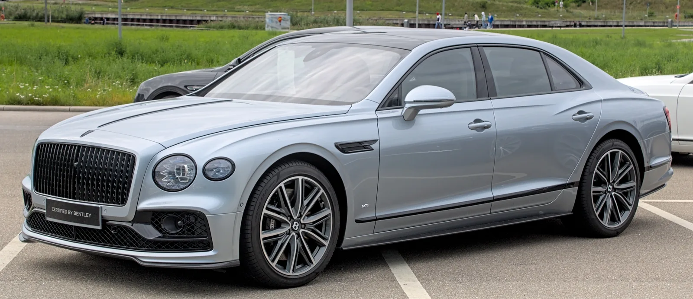
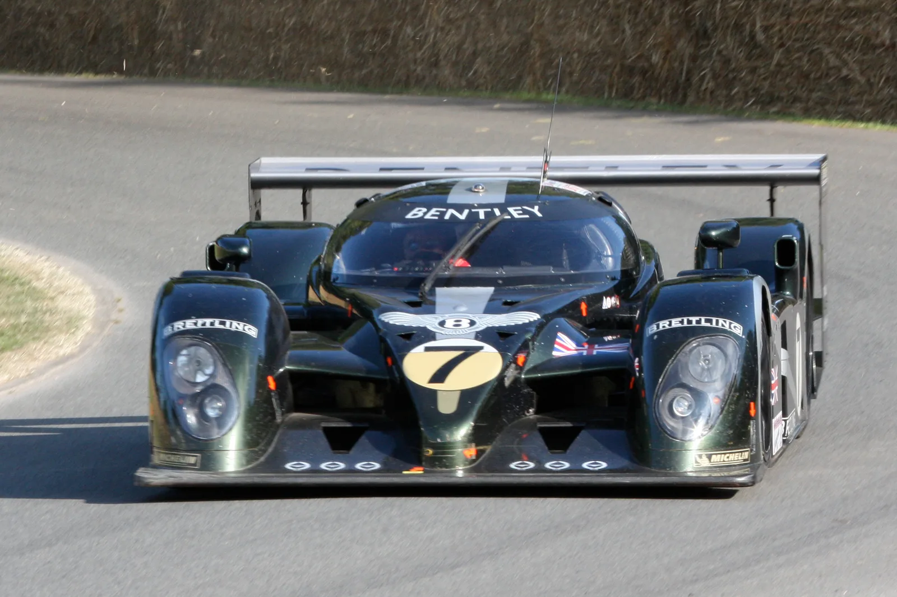
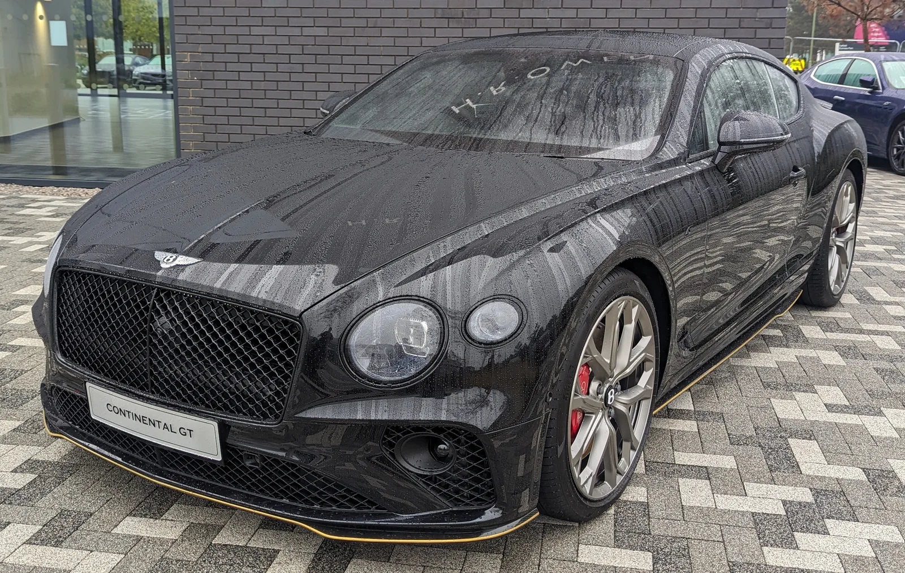

▲ 1926년식 벤틀리 3리터 슈퍼스포츠. 벤틀리는 이탈리아 '뚜또 베네' 힐클라임에서 이 차를 포함해 100년 헤리티지 라인업을 선보였다. ⓒ Wikimedia Commons
이탈리아 북부 마조레 호수와 스트레사 마을을 굽어보는 모타로네산 6km 구간에서 지난 주말 특별한 자동차 축제가 열렸다. 벤틀리모터스가 현지 자동차 문화 이벤트 '뚜또 베네(Tutto Bene)'의 힐클라임에 참가해, 창립 100년을 훌쩍 넘긴 브랜드의 역사를 한 무대에 압축해 보여준 것이다. 지난 8월 미국 몬터레이 카 위크 기간 카멜 밸리에서 열린 '스타치오네 레모타(Stazione Remota)' 행사에 이은 두 달 만의 두 번째 협업 무대였다.
▲ 이번 힐클라임 무대가 된 이탈리아 스트레사와 마조레 호수 전경. 벤틀리 헤리티지 라인업은 호수를 발아래 두고 모타로네산을 오르는 약 6km 구간을 달렸다. ⓒ Tiia Monto, Wikimedia Commons (CC BY 4.0)
모타로네 힐클라임, 순위보다 '즐거움'에 방점
이번 행사가 열린 모타로네 힐클라임 코스는 마조레 호수를 발아래 두고 스트레사 마을을 감아 오르는 약 6km 구간이다. 벤틀리 측은 이번 참가를 두고 "단순한 속도 경쟁 대신 참가 차량 고유의 스타일과 주행의 순수한 즐거움에 초점을 맞췄다"고 설명했다. 랩타임을 다투는 전통적인 힐클라임 경기와 달리, 관람객들에게 각 시대별 벤틀리가 지닌 개성과 디자인 유산을 체감하게 하는 데 목적을 둔 전시성 주행 행사에 가깝다.
수천 명의 관람객이 모타로네 산자락에 모여 클래식카부터 최신 콘셉트카까지 굉음을 내며 코스를 오르는 모습을 지켜봤다. 벤틀리가 이런 유럽 현지의 자동차 문화 축제에 잇따라 공식 참가하는 것은, 단순 신차 마케팅을 넘어 브랜드의 유산 자체를 자산으로 활용하려는 전략으로 풀이된다.

▲ 벤틀리 벤테이가(자료사진) — 2018년 파이크스 피크 인터내셔널 힐클라임에서 양산형 SUV 부문 최고 기록을 세운 '파이크스 피크 벤테이가'도 이번 라인업에 포함됐다
1926년식 '스모키'부터 파이크스 피크 우승차까지
이번 힐클라임에 오른 라인업의 핵심은 100년을 아우르는 시간축이었다. 가장 오래된 차량은 1926년식 오리지널 '슈퍼 스포츠' 모델로, 애칭 '스모키(Smoky)'로 불리는 이 클래식카는 벤틀리 퍼포먼스 역사의 출발점을 상징한다. 좁은 타이어와 스포크 휠, 노출된 프레임 구조 등 1920년대 레이싱카의 원형을 그대로 간직하고 있으며, 현재 영국의 마이크 톰슨·조시 톰슨 부자가 소유하며 각종 헤리티지 행사에 직접 출품하고 있다.
현대 고성능 라인업에서는 2018년 파이크스 피크 인터내셔널 힐클라임에서 양산형 SUV 부문 최고 기록을 세운 '파이크스 피크 벤테이가'가 다시 시동을 걸었다. 당시 2회 우승 경력의 리스 밀렌이 몰아 12.42마일(약 20km) 코스를 10분 49.9초에 주파하며 기존 기록을 2분 가까이 앞당겼다. 산악 힐클라임이라는 무대 자체가 이 차의 이력과 정확히 맞아떨어지는 대목이다. 여기에 익스트림 스포츠 선수 트래비스 파스트라나가 드리프트 쇼에 사용한 '슈퍼스포츠 풀 센드(Full Send)'도 함께 올라 관람객들의 시선을 끌었다.
야광 리버리와 오프로드 콘셉트까지, 벤틀리의 다면성
가장 이색적인 출품작은 웨일스 출신 아티스트 데이비드 귀더, 활동명 '데스스프레이(Deathspray, Death Spray Custom)'가 야광 안료로 마감한 플라잉스퍼였다. 낮에는 여느 플라잉스퍼와 다르지 않지만 어두워지면 차체 전반이 은은하게 빛을 내는 것이 특징으로, 벤틀리가 전통적인 럭셔리 이미지에만 머물지 않고 실험적인 아트카 프로젝트에도 열려 있음을 보여주는 사례다.
오프로드 콘셉트카 '벤테이가 X 콘셉트' 역시 라인업에 이름을 올렸다. 지난해 오스트리아에서 열린 얼음 레이스 'FAT 아이스 레이스'에서 처음 공개된 이 차는, 온로드 럭셔리 SUV로 알려진 벤테이가 스피드를 기반으로 트랙 폭을 120mm 넓히고 차고를 55mm 높였으며 641마력 V8 엔진과 오프로드 타이어를 두른 22인치 휠을 적용한 스터디 모델이다. 지붕 랙에는 전동 카트까지 실을 수 있어, 브랜드가 SUV 세그먼트에서도 다양한 파생 가능성을 검토하고 있음을 시사한다. 여기에 2003년 24시간 르망 레이스에서 우승을 차지한 '스피드 8'까지 가세하며, 이번 라인업은 도로용 럭셔리카와 레이스카를 아우르는 벤틀리의 전방위 역사를 압축했다.

▲ 벤틀리 플라잉스퍼(자료사진) — 이번 힐클라임에는 웨일스 아티스트 데스스프레이가 야광 안료 리버리를 입힌 아트카 버전 플라잉스퍼가 출품됐다
2003년 르망 우승, 벤틀리 레이싱 헤리티지의 정점
스피드 8이 상징하는 2003년 르망 우승은 벤틀리 역사에서 각별한 의미를 지닌다. 벤틀리는 1920년대 르망에서 다섯 차례 우승하며 '벤틀리 보이즈'라는 전설을 남겼지만, 이후 오랫동안 르망 무대에서 자취를 감췄다. 2003년 스피드 8이 우승컵을 들어올리며 73년 만에 명예를 되찾았고, 이는 벤틀리가 단순한 럭셔리 브랜드가 아니라 유서 깊은 모터스포츠 DNA를 지닌 브랜드임을 재확인시킨 사건이었다. 이런 배경 때문에 스피드 8은 이번 헤리티지 라인업에서도 사실상 하이라이트로 꼽힌다.

▲ 2003년 24시간 르망 우승차 벤틀리 스피드 8 — 73년 만에 벤틀리에 르망 우승을 안긴 레이스카로, 이번 힐클라임에도 함께 출품됐다
몬터레이에 이은 두 번째 협업, 헤리티지 마케팅의 확장
이번 행사는 지난 8월 미국 몬터레이 카 위크에서 진행한 협업에 이은 두 번째 무대라는 점에서도 의미가 있다. 몬터레이와 이탈리아 마조레 호수 모두 전 세계 클래식카 애호가와 컬렉터들이 모이는 상징적인 장소다. 벤틀리가 이런 자동차 문화 축제에 연이어 헤리티지 차량을 앞세워 참가하는 것은, 100주년을 넘긴 브랜드 유산을 잠재 고객층과의 접점을 넓히는 마케팅 자산으로 적극 활용하겠다는 전략으로 해석된다.
벤틀리 공식 소식은 벤틀리모터스 뉴스룸에서 확인 가능하다. 벤틀리 뉴스룸 바로가기

▲ 벤틀리 컨티넨탈 GT(자료사진) — 벤틀리코리아는 컨티넨탈 GT를 비롯해 벤테이가, 플라잉스퍼 등 주요 라인업을 국내에 정식 판매하고 있다
국내 벤틀리 라인업 현황
한편 국내 시장에서는 벤틀리코리아가 벤테이가, 컨티넨탈 GT, 플라잉스퍼 등 주요 라인업을 순차적으로 운영하며 럭셔리 SUV·그랜드투어러 수요층을 공략하고 있다. 이번 이탈리아 힐클라임에서 소개된 헤리티지 스토리는 향후 국내 마케팅 활동에도 브랜드 이미지 제고 요소로 활용될 가능성이 있다.